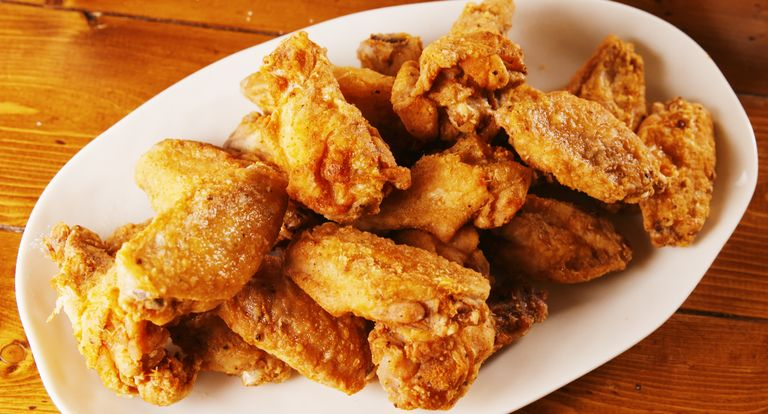

Spicy Fried Chicken Wings

Spicy Fried Chicken Wings Recipe:
Fried Chicken Wings Are Game Day Ready. Fried chicken wings are so easy to make and always turn out great.
Be sure to let them refrigerate for at least an hour. It well help the flavour and ensure they are extra crispy.
Here's some chicken-fried chicken if you're REALLY craving some fried chicken.
Ingredients
- 900g Chicken Wings
- Salt and ground black pepper
- 250g plain flour
- 1 tsp. garlic powder
- 1/2 tsp mustard powder
- 1/4 tsp cayenne pepper
- Vegetable oil for frying
Cooking Instructions
- Rinse wings under cold water then pat dry with paper towels.
Place wings on a baking tray lined with a cooling rack then season wings on both sides with salt and pepper. Refrigerate for 1 hour.
- In a shallow bowl, stir together flour and spices then season with salt and pepper. Working one at a time, coat chicken in flour mixture.
- In a large pot over medium heat, heat 5cm oil until shimmering (about 180°C).
Working in batches, fry chicken until deeply golden and cooked through, 8 minutes.
- Drain on a paper towel lined plate. Serve warm.